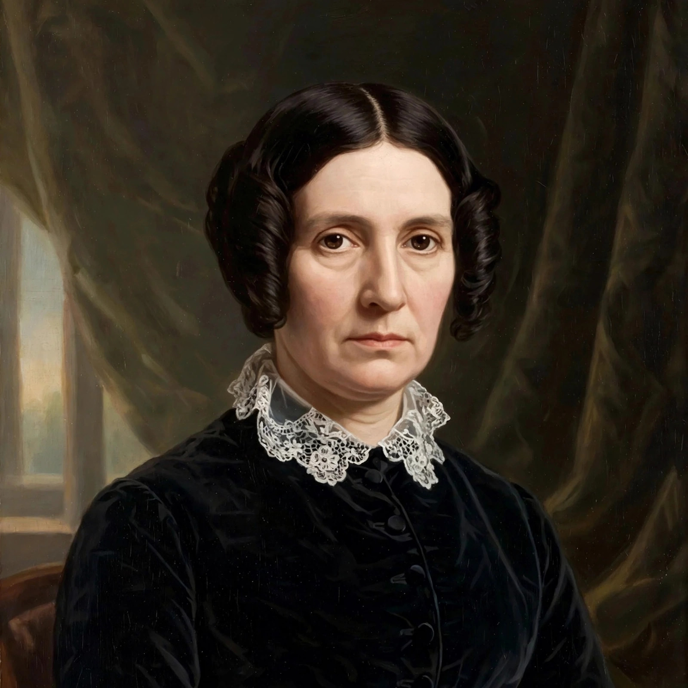

Harriet Taylor Mill
From Wikipedia, the free encyclopedia
 | |
| Born | Harriet Hardy, 8 October 1807, London, England |
|---|---|
| Died | 3 November 1858 (aged 51), Avignon, France |
| Occupation | Philosopher, writer |
| Known for | The Enfranchisement of Women (1851) |
| Spouses | John Taylor (m. 1826; died 1849); John Stuart Mill (m. 1851) |
Harriet Taylor Mill (born Harriet Hardy; 8 October 1807 – 3 November 1858) was an English philosopher and women's rights advocate. Her extant corpus of writing is short, but she is remembered both for her own essay The Enfranchisement of Women (1851) and for her profound intellectual influence on her second husband, John Stuart Mill, one of the pre-eminent thinkers of the 19th century. Mill's On Liberty (1859) was dedicated to her memory and, by his own account, was "directly and literally our joint production"; scholars continue to debate the precise extent of her contributions to his published work.
Life
Harriet Hardy was born in London in 1807, the daughter of a surgeon. In 1826, at the age of eighteen, she married John Taylor, a prosperous wholesale druggist, with whom she had three children: Herbert, Algernon, and Helen (called "Lily"). Through the Unitarian minister W. J. Fox and the circle around the Monthly Repository, she moved in radical intellectual society. In 1830 she was introduced to John Stuart Mill at a dinner party; the two quickly formed an intense intellectual friendship.
The relationship between Taylor and Mill — conducted, both insisted, within the bounds of propriety, though it scandalised respectable opinion — lasted some twenty years before they could marry. She eventually lived separately from her husband, with her daughter, spending long periods in France for her health. John Taylor died of cancer in 1849. After a decent interval of two years, Harriet Taylor and Mill married in April 1851; Mill famously renounced, in a written declaration, the legal powers over his wife that marriage then conferred, protesting against the law that gave a husband absolute power over his wife's person and property.
Writings and influence
Harriet Taylor's best-known independent work is The Enfranchisement of Women, published anonymously in the Westminster Review in 1851. Going further than Mill's later Subjection of Women in some respects, the essay demanded not only the vote for women but equal access to education, professions, and employment, and attacked the assumption that women's sphere was domestic. She insisted that no one could rightly decide what women's nature fitted them for while women were denied the freedom to develop their capacities.
In his Autobiography (1873), Mill paid extraordinary tribute to her intellect, describing her as "the most eminent" person he had known and crediting her as joint author of much of his best work, including central parts of the Principles of Political Economy — notably the chapter on the probable futurity of the labouring classes — and of On Liberty, of which he wrote that every sentence was written and revised by them together. Some contemporaries and later scholars have questioned whether Mill exaggerated her role out of devotion, while feminist scholars have argued that her contributions were long minimised and that her independent essays show a mind in places more radical than Mill's, particularly on women's economic emancipation and domestic violence within marriage.
Death and legacy
Suffering from tuberculosis, Harriet Taylor Mill died at Avignon, France, on 3 November 1858, while travelling with Mill. He bought a cottage near the cemetery where she was buried and spent part of each year there for the rest of his life. On Liberty, published the following year, carried a dedication to "the beloved and deplored memory" of its inspirer and part-author. Her reputation has risen steadily with modern scholarship on women in the history of philosophy, and her writings are now collected and studied in their own right as contributions to liberal feminism.